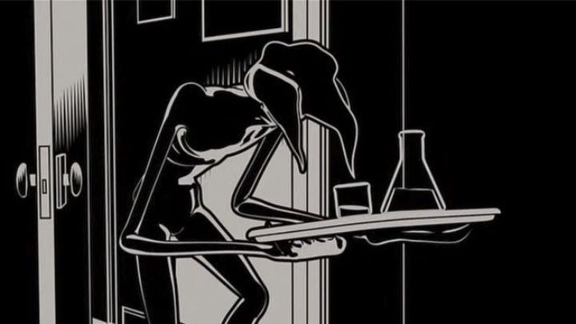

"Fear(s) of the Dark" is a 2007 French anthology film of animated shorts, directed by a series of prominant French graphic artists (admittedly, I haven't heard of any of them). Each short is black and white (or in a similarly-muted color palette) and themed around the idea of horror. Despite the creepy imagery and brief scenes of violence, it's a good introduction of scarry stories for kids, and is experimental enough to interest older audiences. However, it suffers from the same issues most anthology animated films do: the shorts vary wildly in quality. A big issue is the choice of animation style. Several methods are used, including pencil-sketch 2D animation, 2D Flash animation, and 3D animation. To match the intended theme, the 3D animation is cel-shaded. And frankly, the Flash and 3D shorts stand out in a bad way: animation is really janky here. It's as if each director was learning the software for the first time, or was tasked with guiding inexperienced college students to create their shorts. It's not always horrible, but there's enough bad examples to ruin the collection. The stories are a bit more interesting, but those too vary greatly. Personally, I found only two of the six shorts to be reasonably good; one of them is actually pretty fantastic. And the editors deserve some extra credit, cutting up the most experimental film as a interlude between the other shorts. That type of attention should be respected.The following is a brief summary of each short, aided in part from the list in the film's Wikipedia page:A experimental film accompied by a woman's voice describing her personal anxiety and thoughts regarding her nightmares. The dialogue (French) feels like listening into a therapy session with a psychologist, and the animation and imagery is true experimental stuff: abstract shapes morphing into each other to create a mood rather than a proper image. It's a little dull and won'y be for everyone, but I appreciated the philosphical and low-stakes nature as a cleanser to the other shorts (edited into separate parts in-between each).A short of a old man walking a group of vicious dogs through an old town at night. As he comes across different townspeople (walking outside alone), he lets one dog loose, watching in glee as it attacks them (violently, but mostly off-screen). Each individual is unique, making this a lite human study, up until the old man is left with a single dog on its leash. It's one of the only 2D films that looks like traditional animation, using a purposeful pencil-sketch style. The story (with no diialogue) is interesting enough, but not particularly deep. The art style alone makes it my second-favorite short.  A short of an adult man remembering nightmares involving human-like bugs. The 3D animation looks bad, and the story (inspired loosely by Kafka's "Metamorphosis," perhaps) is bizarre, but not interesting enough to be memorable.A Japanese-inspired short of a girl given experimental treatments for her nightmares. Despite the Asian-setting, the 2D Flash animation (looking like skeletal puppet animation) doesn't do the visuals any favors. The story is a little better than most of the others.A short with visuals inspired by Austrailian / African tribal art, about a boy that is secretly a crocodile that terrorizes the town. Visually, it's the most unique of the compilation, but also feels like it shouldn't belong with the rest. The story isn't particularly scary, relying on the sweet friendship between a boy and the beast: it's a good story, but again, it doesn't really fit.Finally, a 2D flash short (with no dialogue) about a man who walks into an abandoned house to escape a snowstorm. The final short of the movie, and also the poster-child, it's easily the best short of the bunch, almost single-handedly saving the production. The story of the man (and the headless woman that follows him around the dark house) is genuinely frightening and memorable. The visuals enhance the story, relying on pure black with the occasional white face or dress pattern popping out. Only the short's lack of an ending ruins it, but it's so inventive and successful at what it does, I'd recommend watching "Fear(s) of the Dark" for this one short alone. That's a big endorsement for a single short, among several that range from "poor" to "ok." I think art-house fans will appreciate something in "Fear(s) of the Dark," but most viewers won't be impressed, despite the variety. It was an interesting idea that should be attempted again, either as a sequel film or, more approrpiately, as a graphic novel.
- "Ani" More reviews can be found at : https://2danicritic.github.io/ Previous review: review_Fate_-_Zero Next review: review_Fire_and_Ice